People
The capacity, skills, clarity, and accountability around the work. Who owns the next step, and do they have what they need?
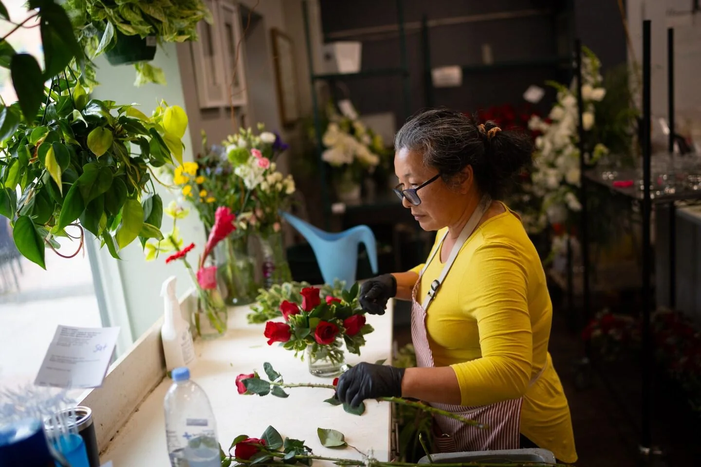
About
Customers need answers. Employees need direction. Work needs to move. One Mahogany Global exists to help put the right support around that responsibility.
Where the perspective came from
Before One Mahogany Global, there was experience inside different businesses, alongside the people responsible for making the work happen.
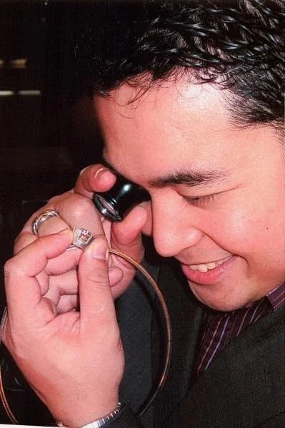
From the inside
A customer calls. Someone answers. A sale happens. A service gets delivered. Each moment depends on something else working correctly.
People need information. Customers need follow-up. Managers need visibility. Standards need consistency. The customer experience is the visible end of a much larger system.
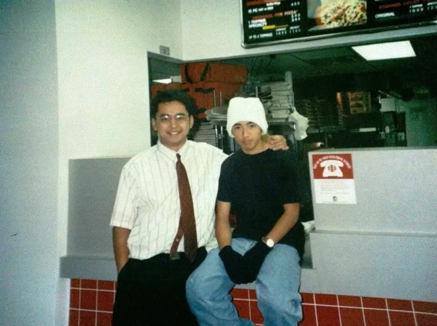
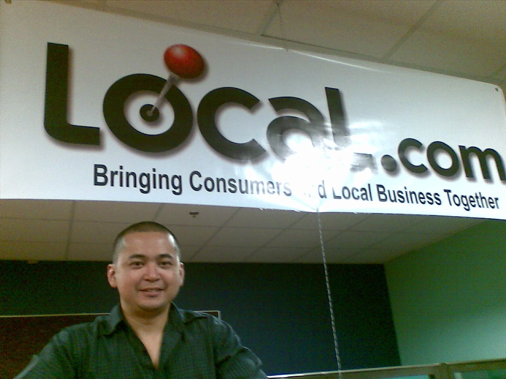
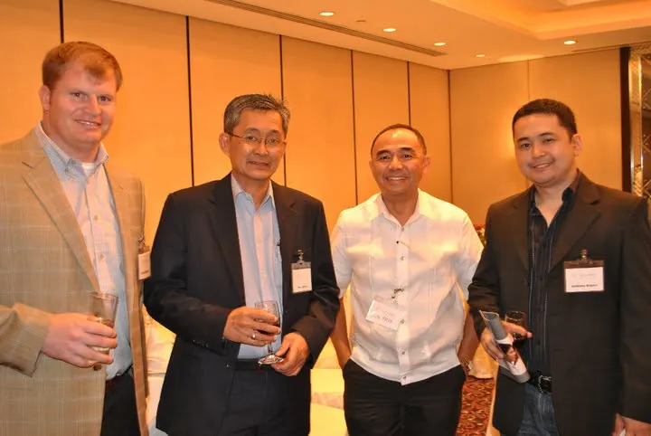
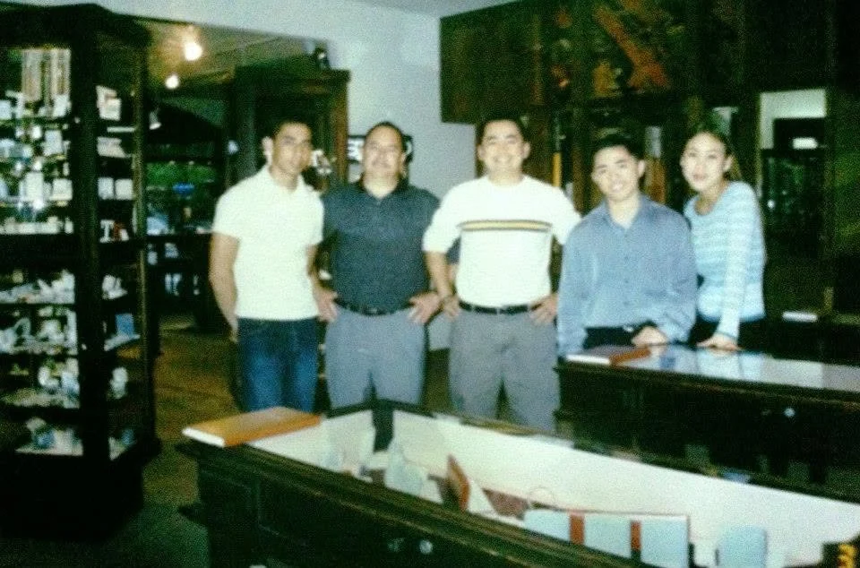
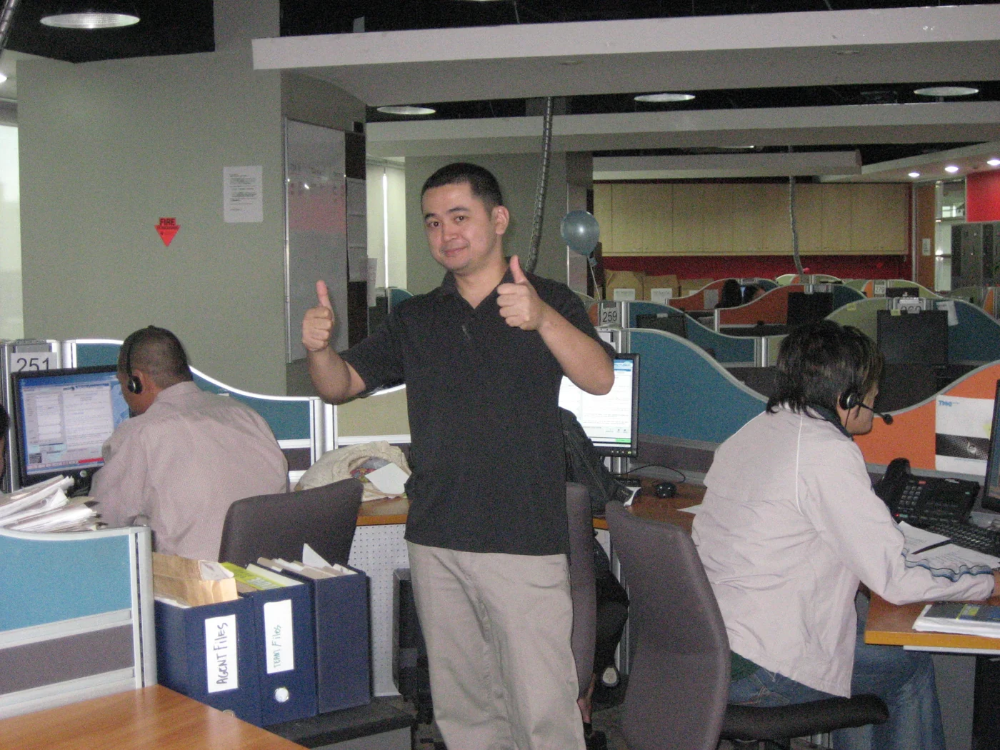
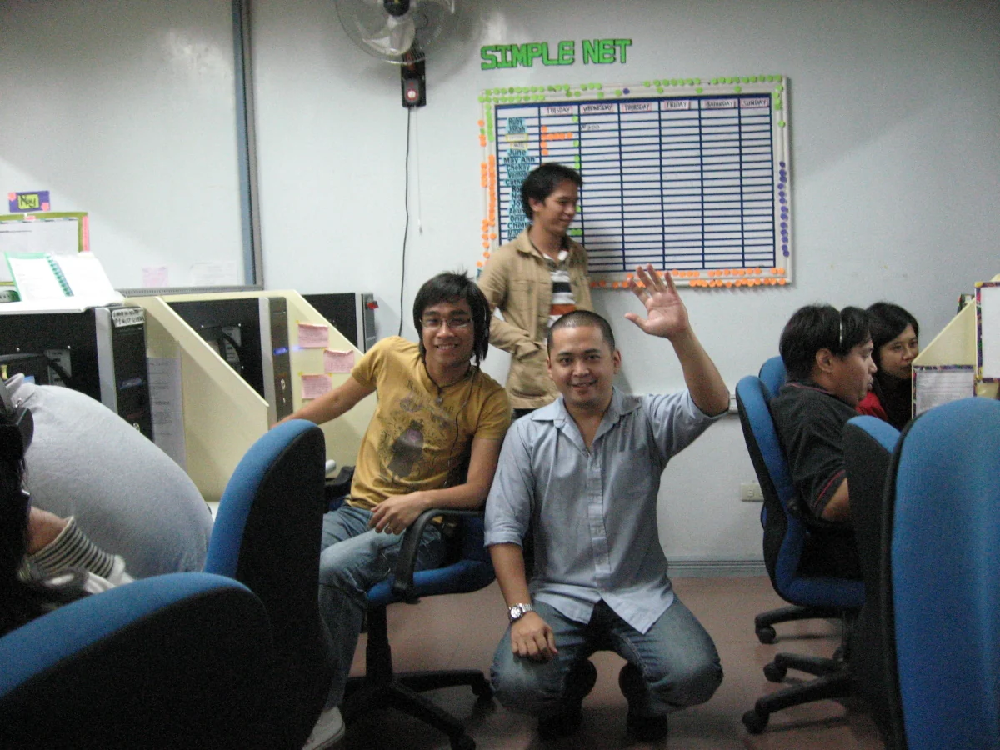
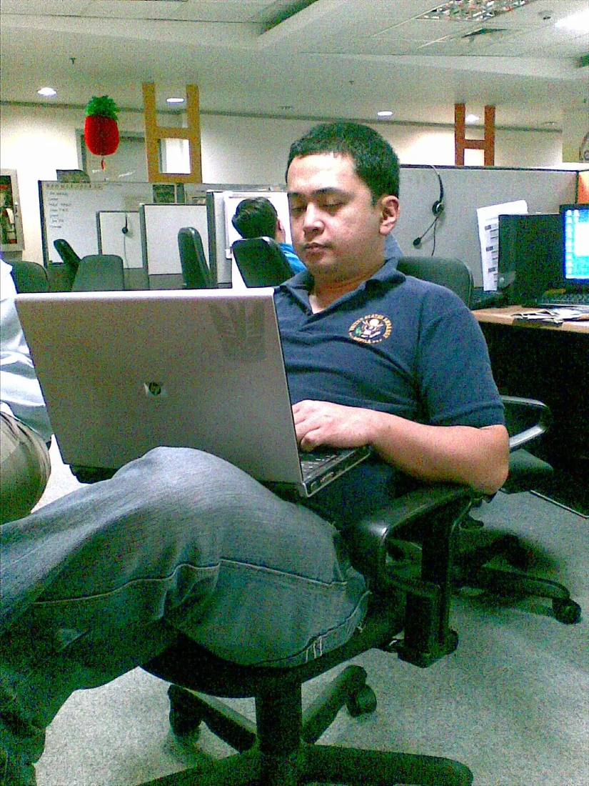
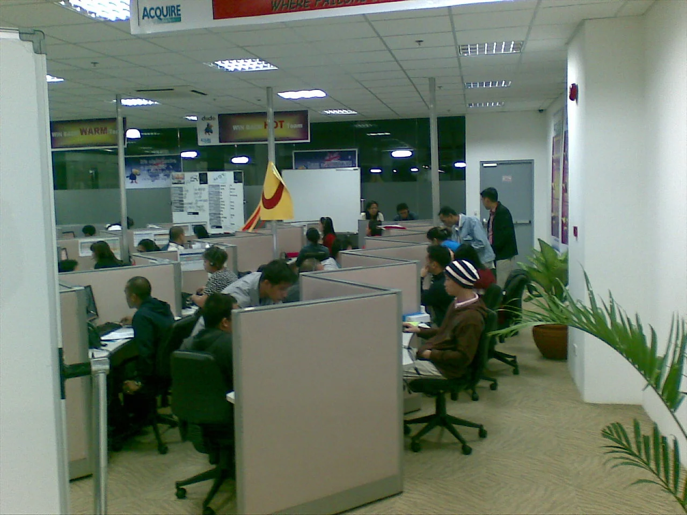
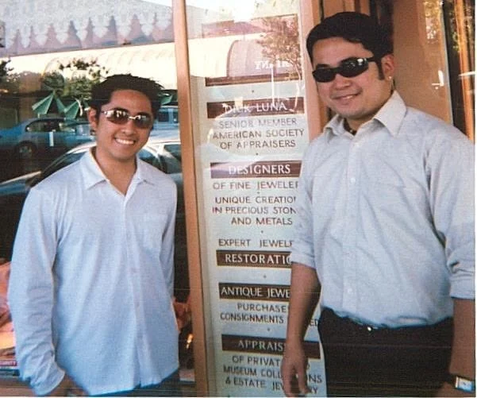
A chapter in the journey · Heartland
Tony’s time at Heartland adds a payments-industry chapter to his experience across customer-facing businesses and operational teams.
This record from his personal archive connects that chapter to the broader perspective behind One Mahogany Global.
From Tony’s career archiveAnthony Blanco · Selected fields from the supplied record
| Rep name | Region | Division | Role |
|---|---|---|---|
| Anthony Blanco | Evergreen | CA13 | RM |
Recreated from Tony’s supplied archive. Reporting period not shown in the original.
Putting experience to work
Tony’s experience across customer-facing businesses and operational teams shapes how One Mahogany Global approaches the work: understand the situation first, then bring the right support around it.
That means looking beyond an isolated task to the people, business systems, and processes around it—so the next step fits how your business actually works.
See how we workThe connected framework
A business problem rarely sits in one place. We look at the whole path the work takes.
The capacity, skills, clarity, and accountability around the work. Who owns the next step, and do they have what they need?
The tools, information, technology, and operating infrastructure that support people. Do they connect, and do they make work easier?
The way work moves from one person or decision to the next. Clear handoffs, follow-up, standards, and ownership.
Technology and AI can support the work where appropriate. They belong inside the solution, guided by the people and process around them.
The bigger picture
Behind the everyday work are people, families, and communities. That is why the right support matters.
One Mahogany Global · 15-second brand film
Our core belief
Tools change. Technology changes. Someone still makes the promise, does the work, serves the customer, and earns the trust.
Start with what is happening in the business, rather than deciding in advance what the owner should buy.
Technology should make work clearer, faster, and more reliable. Its purpose is to support the people doing the work.
When someone entrusts part of their business to us, we accept responsibility for doing our part well.
The 5A operating principles
Understand what the business owner is trying to accomplish.
Understand what is happening before deciding what should change.
Take ownership of the responsibilities entrusted to us.
Turn plans and decisions into consistent execution.
Help build people, systems, processes, and capabilities that continue creating value.
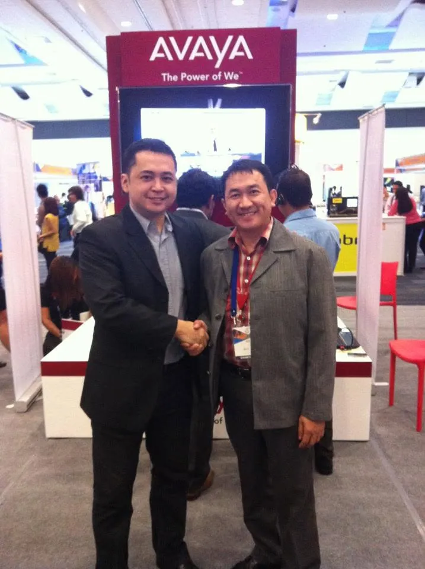
Accountability starts here
One Mahogany Global was founded by Anthony Blanco after years spent working inside and alongside businesses, operational teams, customers, employees, and business owners.
The value of that experience is the perspective it created: seeing familiar challenges across different environments, and understanding how people, systems, and process affect one another.
The business owner remains the main character. Our responsibility is to stand behind the work and help put the right support around them.